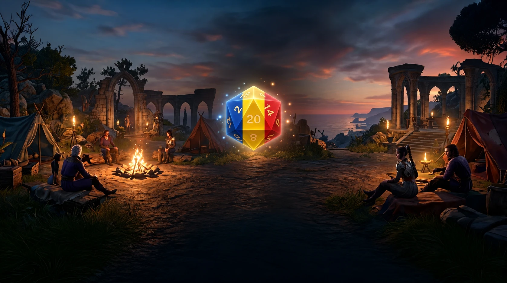

Fiecare text contează.
Revizuiesc manual formulările pentru sens, ton și naturalețe. Verific textele în joc, astfel încât replicile și descrierile să se potrivească situației.

Sunt Gabrielish și de câteva luni lucrez singur la traducerea neoficială în limba română pentru Baldur’s Gate 3. Traduc și verific manual textele în joc, cu răbdare și atenție la context.
Obiectivul meu este o traducere integrală, firească și consecventă — de la dialoguri și cărți la interfață, obiecte și vrăji. Urmăresc să păstrez sensul, umorul și personalitatea personajelor, cu acorduri corecte la feminin și masculin.
Este o traducere a textelor, nu un dublaj: înregistrările audio originale rămân neschimbate.
Revizuiesc manual formulările pentru sens, ton și naturalețe. Verific textele în joc, astfel încât replicile și descrierile să se potrivească situației.
Urmăresc cine vorbește și cui i se adresează. Verific formele de feminin și masculin în context, pentru ca fiecare replică să respecte personajul.
Traducerea este gratuită și în continuă dezvoltare. O captură sau o observație trimisă pe Nexus Mods mă ajută să corectez greșelile și să îmbunătățesc textele.
Eroina ta nu trebuie să fie „vindecat”. Modul experimental pentru jurnalul de luptă urmărește genul țintei și adaptează formulările din mesaje.
„Vindecat” sau „vindecată”, „l-a ratat” sau „a ratat-o”: detalii mici care fac diferența chiar și în mijlocul unei lupte.
Shadowheart a lansat Cuvânt de Vindecare.
Shadowheart a vindecat-o pe Tav cu 7 Puncte de Viață.
Tav a fost vindecată cu 7 Puncte de Viață.
Lae’zel a ratat-o pe Tav.
Exemplu ilustrativ de acord. Demonstrația de pe site nu rulează modul și nu reflectă timpul de răspuns din joc.
Raritatea și starea unui obiect trebuie să se acorde cu denumirea lui, nu să rămână aceeași etichetă peste tot.
Modul pentru obiecte adaptează etichetele de raritate și formele „Echipat”, „Echipată”, „Echipați” sau „Echipate”, în funcție de obiect.
Neobișnuit
EchipatNeobișnuită
EchipatăRari
EchipațiRare
EchipateExemple ilustrative de acord al etichetelor, nu capturi ale unor obiecte din joc.
O conversație trebuie să țină cont de personajul căruia i se vorbește. Variantele de dialog la feminin și masculin păstrează sensul replicii, cu forma de adresare potrivită.
Actul I este verificat complet, inclusiv pentru variantele de gen. Urmează verificarea Actului II.
„Ești pregătită? Nu vei fi singură în această luptă.”
„Ești pregătit? Nu vei fi singur în această luptă.”
Replici ilustrative pentru diferențele de gen, nu citate din joc.
Traduc și verific textele în joc, apoi le îmbunătățesc pe baza feedbackului tău. Proiectul nu este încă finalizat.
Traducerea de bază este în Early Access. Descarcă versiunea publică și consultă pe Nexus conținutul inclus în fiecare actualizare.
Vezi versiunea publicăRevizie de dialoguri, terminologie și acord. Extensia experimentală pentru jurnal are ca punct de plecare v10, cu Script Extender 33 experimental.
Explorează exemplulDialoguri, cărți, descrieri și restul textelor jocului. Obiectivul este o traducere integrală, revizuită, fără să sacrific calitatea pentru viteză.
Ajută cu feedbackIa traducerea, pornește aventura și spune-mi ce poate suna mai bine. Proiectul este și rămâne gratuit.
Descarcă de pe Nexus Mods Early Access · traducere neoficială · de GabrielishFișierele și cerințele actualizate sunt pe pagina Nexus. Nu amesteca pachete de test vechi cu versiunea publică.
Consultă descrierea modului înainte de instalare și păstrează o copie a fișierelor pe care le înlocuiești.
O captură, replica și contextul sunt suficiente pentru a mă ajuta să corectez un text sau un acord.
Nu încă. Proiectul este în Early Access și urmărește traducerea integrală. Pagina Nexus rămâne sursa pentru stadiul versiunii publice și conținutul inclus.
Revizuiesc manual formulările și le verific în joc, urmărind sensul, tonul și acordul gramatical în context. Verificarea se face treptat, pe parcursul dezvoltării; o versiune Early Access poate conține încă greșeli sau texte nerevizuite.
Traducerea de bază și extensia pentru acordul din jurnal sunt lucruri diferite. Prototipul de jurnal v10 folosește Script Extender 33 experimental; nu îl confunda cu cerințele pachetului public. Verifică întotdeauna instrucțiunile fișierului pe care îl instalezi.
În secțiunea Posts de pe Nexus Mods. Include o captură și, când acordul este problema, personajul și genul său în salvarea respectivă.
În spatele fiecărei replici traduse sunt timp, atenție și multe verificări în joc. Dacă îți place să descoperi Faerûn în română și vrei să susții munca mea, o poți face pe Patreon sau cu o cafea pe Ko-fi.
Sprijinul este complet opțional. Traducerea este și rămâne gratuită — iar feedbackul tău contează la fel de mult.
Pentru poveștile pe care vrem să le trăim.
Și în limba noastră.